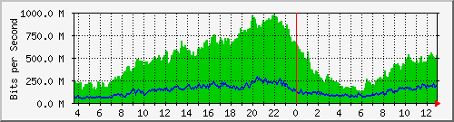
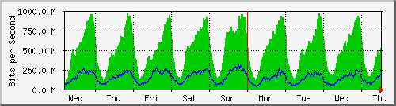
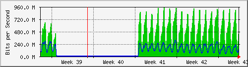
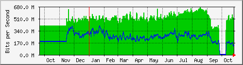

Traffic Analysis for Gi1/0/12 -- ISP-border.sky
| System: | ISP-border.sky in Stoika |
| Maintainer: | falcon@skyinet.org |
| Description: | GigabitEthernet1/0/12 Uplink Data |
| ifType: | ethernetCsmacd (6) |
| ifName: | Gi1/0/12 |
| Max Speed: | 1000.0 Mbits/s |
| Ip: | No Ip (No DNS name) |
The statistics were last updated Thursday, 26 October 2017 at 12:55,
at which time 'ISP-border.sky' had been up for 8 days, 10:32:46.
`Daily' Graph (5 Minute Average)

|
Max |
Average |
Current |
| In |
970.1 Mb/s (97.0%) |
466.6 Mb/s (46.7%) |
527.5 Mb/s (52.7%) |
| Out |
287.0 Mb/s (28.7%) |
134.7 Mb/s (13.5%) |
171.0 Mb/s (17.1%) |
`Weekly' Graph (30 Minute Average)

|
Max |
Average |
Current |
| In |
965.6 Mb/s (96.6%) |
510.2 Mb/s (51.0%) |
525.1 Mb/s (52.5%) |
| Out |
314.7 Mb/s (31.5%) |
148.9 Mb/s (14.9%) |
183.4 Mb/s (18.3%) |
`Monthly' Graph (2 Hour Average)

|
Max |
Average |
Current |
| In |
948.2 Mb/s (94.8%) |
286.0 Mb/s (28.6%) |
441.3 Mb/s (44.1%) |
| Out |
314.8 Mb/s (31.5%) |
96.2 Mb/s (9.6%) |
150.4 Mb/s (15.0%) |
`Yearly' Graph (1 Day Average)

|
Max |
Average |
Current |
| In |
669.9 Mb/s (67.0%) |
487.0 Mb/s (48.7%) |
523.4 Mb/s (52.3%) |
| Out |
405.0 Mb/s (40.5%) |
241.7 Mb/s (24.2%) |
139.7 Mb/s (14.0%) |
| GREEN ### |
Incoming Traffic in Bits per Second |
| BLUE ### |
Outgoing Traffic in Bits per Second |